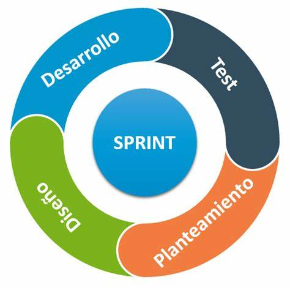
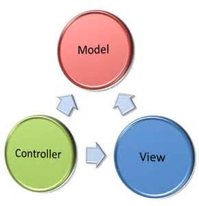
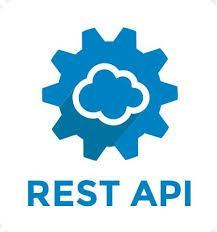

Conocimiento
- Metodologías Ágiles 
- Lenguaje Java Script
- Desarrollo Modelo-Vista-Controlador 
- HTML5
- CSS3
- Rest API 
- Node JS
- Express JS
- React
- Jquery
- JavaScript para frontend
- Base de datos SQL
- phpMyAdmin
- Conocimientos de arquitectura de computadoras
- Git y Github
- Conocimiento para desarrollar una aplicacion web desde 0
- Conocimientos de WordPress
Soy un Desarrollador web Full Stack junior, tanto frontend como backend. Estudie en Digital House y puedo realizar una pagina web dinamica desde 0, cree este portafolio para mostrar las cosas que realizo
Link de mi Github